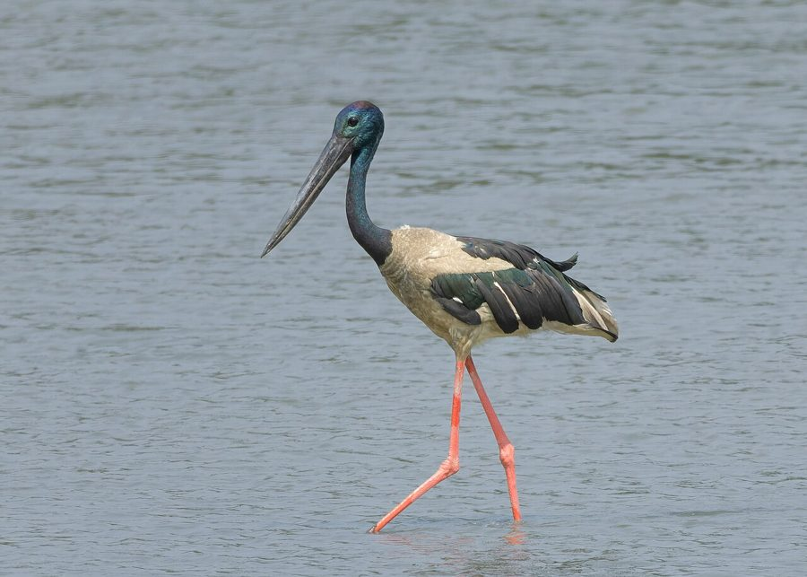

लोहासारंगBlack-necked Stork
Ephippiorhynchus asiaticus · Ciconiidae · BRD-0188

- Scientific name वैज्ञानिक नाम
- Ephippiorhynchus asiaticus (Latham, 1790)
- Family कुल
- Ciconiidae
- Hindi हिंदी
- लोहासारंग
- Local names स्थानीय नाम
- lohasarang, loha sarang, black necked stork, stork
- Status here यहाँ की स्थिति
- native
- Movement आवागमन
- Resident, here all year
- Known from कहाँ दर्ज
- Others have published records from the Basti–Ayodhya districts बस्ती–अयोध्या के ज़िलों से दूसरों के प्रकाशित अभिलेख
- IUCN IUCN
- NT
- Review समीक्षा
- audited and independently read
When to look कब देखें
Present all year. साल भर मौजूद।
Uses and possibilities उपयोग और संभावनाएँ
Drawn from the documented uses in the profile below, where each is labelled traditional, current or a research lead. All uses →
Tell it apart from इनसे अलग पहचानें
लोहासारंग / Black-necked Stork
Ephippiorhynchus asiaticus (Latham, 1790) — Ciconiidae
लोहासारंग — विशाल सारंग (सारस), जो बड़ी नीली टाँगें और मजबूत चोंच के साथ तालाबों और नदियों में शिकार करता है। इसके सिर और गर्दन पर काली चमकदार पंख होते हैं। जोड़ों में या अकेले रहता है। घोंसले विशाल होते हैं — बड़े पेड़ों पर सूखी लकड़ियों का विशाल घोंसला।
Quick Identification त्वरित पहचान
| Feature | Description |
|---|---|
| Size | Large wading bird; 100–130 cm tall; 1.5–2 m wingspan |
| Plumage | Black head, neck, back, and wings; white belly and vent |
| Legs | Long, stout, blue-grey (bright when breeding) |
| Bill | Very large, stout, pointed; pale yellow or greenish |
| Eyes | Bare yellow orbital ring |
| Behaviour | Solitary or in pairs; walks slowly in shallow water; stalks fish |
Field tip: An unmistakable large black-and-white stork with brilliant blue-grey legs and powerful bill. Found wading in shallow wetlands. Look for it in large jheels, river systems, and floodplain lakes, especially where water level is shallow (0.5–1 m).
हिंदी — कैसे पहचानें:
विशाल सारंग, काला-सफेद रंग। लंबी नीली टाँगें। मजबूत पीली चोंच। तालाबों में धीरे-धीरे चलता है, मछलियों को खोजता है।
Morphology आकारिकी
Biometrics:
| Measurement | Range |
|---|---|
| Total height | 1000–1300 mm |
| Wing (flattened chord) | 490–550 mm |
| Tail | 210–260 mm |
| Culmen | 140–180 mm |
| Tarsus | 145–185 mm (blue-grey, scutellated) |
| Weight | 3400–4600 g |
Size: Large stork; 100–130 cm tall; wingspan 1.5–2 m.
Plumage: Head and neck glossy black; feathers on head often raised when alert. Back and wings black with greenish sheen. Lower back white. Belly, vent, and undertail-coverts white. Tail black.
Sexual dimorphism: Males and females similar externally; males slightly larger and may have more intense colours during breeding.
Legs: Long, stout, blue-grey or greenish-blue (bright turquoise in breeding season); unfeathered lower tibia and tarsus.
Bill: Very large, pointed, pale yellow or greenish-yellow; curved slightly downward. Gular pouch (throat) may show bright colour in breeding season.
Eyes: Dark with bare yellow orbital ring.
Vocalisations. Call repertoire:
- Bill-clattering: Loud, rapid clicking of bill mandibles; used in greeting and threat displays.
- Calls: Generally silent birds; occasional grunts or low croaks.
- Hissing: When disturbed or defending territory.
हिंदी: सिर और गर्दन काली, चमकदार। पीठ काली, पेट सफेद। लंबी नीली टाँगें, बहुत मजबूत। चोंच मोटी, पीली। आवाज़ बहुत कम; चोंच की क्लिक सबसे आम है।
Behaviour & Ecology व्यवहार और पारिस्थितिकता
Foraging ecology: Solitary or paired waders. Hunts by stalking slowly through shallow water, watching carefully for prey. When prey is sighted, strikes quickly with precise bill thrust. Feeds on:
- Fish (medium to large species; 10–30 cm)
- Frogs and amphibians (tadpoles, adult frogs)
- Crabs and large crustaceans
- Snakes and aquatic reptiles
- Rarely small turtles or waterbirds
Habitat use: Prefers shallow wetlands with open water and clear visibility. Uses jheels, floodplain lakes, river bends, and marshes. Avoids densely vegetated areas; prefers moderate water depth (30–100 cm).
Social behaviour: Usually solitary or in pairs; pairs remain together year-round and for multiple breeding seasons. Highly territorial; males defend feeding and nesting territories.
Nesting: Builds massive stick nest in tall trees (20–30 m height). Often reuses and adds to nest over years, making it enormous. Breeds in dry/early monsoon season (January–May depending on water levels).
Movement: Partially nomadic; moves to areas with better water availability and fish concentration. Not true migrant but responds to seasonal water availability.
हिंदी: अकेले या जोड़ों में रहते हैं। तालाब में धीरे-धीरे चलते हुए मछलियाँ देखते हैं। तेजी से चोंच मारते हैं। बहुत बड़े पेड़ों में घोंसले बनाते हैं। पानी के स्तर के साथ घूमते हैं।
Life Cycle / Phenology जीवन चक्र
Breeding: Breeds January–May (varies with water availability). Monogamous and pair-bonding persistent.
Nesting: Constructs enormous stick nest in tall trees; adds to nest annually. Clutch 2–3 eggs (rarely 4); incubation 28–30 days; fledging 60–70 days.
Feeding young: Both parents participate in chick-rearing; young remain dependent for several months post-fledging.
Territorial behaviour: Highly vocal in defending territory; bill-clattering serves as territorial advertisement.
Moult: Gradual moult post-breeding; complete renewal of plumage.
| Month | Event |
|---|---|
| January–February | Territory establishment; courtship |
| February–April | Nesting; egg-laying and incubation |
| April–June | Chick-rearing; fledging |
| June–December | Non-breeding; wandering |
हिंदी: जनवरी-मई में घोंसले बनाते और अंडे देते हैं। 60-70 दिन में बच्चे उड़ने लगते हैं। पूरे साल यहीं रहते हैं, पर पानी की तलाश में घूमते हैं।
Host Plants or Prey आहार
| Food Type | Examples | Feeding Behaviour |
|---|---|---|
| Fish | Catfish, carp, perch (10–30 cm) | Wade and stalk; strike with bill |
| Amphibians | Frogs, tadpoles | Wade; pounce from shallows |
| Crustaceans | Crabs, crayfish | Wade; probe in mud |
| Aquatic reptiles | Snakes, occasionally lizards | Wade; strike |
हिंदी: मछलियाँ इसका मुख्य भोजन हैं। मेंढक, केकड़े भी खाते हैं। कभी-कभी साँप भी पकड़ते हैं। तालाब में धीरे-धीरे चलते हुए शिकार करते हैं।
Predators / Natural Enemies शत्रु
- At nest: Large eagles (, occasionally), jackals, monitors may attempt predation on eggs or chicks
- Adult: Few predators due to large size; occasional conflict with large raptors
- Parasites: Waterfowl parasites
हिंदी: बड़ी चिड़ियाँ अंडों के लिए खतरा हो सकती हैं। गीदड़ और बड़े सरीसृप भी घोंसले को धमकाते हैं। बड़े होने के कारण वयस्कों को कम शिकारी खतरा हैं।
Agricultural / Human Relevance कृषि प्रासंगिकता
Protected status: Black-necked Stork is protected under the Wildlife (Protection) Act 1972, Schedule I. It is listed as Near Threatened (NT) globally. All wild birds listed are protected; hunting and trapping are prohibited.
Wetland indicator: Presence indicates healthy wetland ecosystem with good fish populations and adequate water management. Loss of populations reflects wetland degradation.
Threatened by: Drainage of wetlands for agriculture, water extraction, pesticide pollution (bioaccumulation in fish prey), hunting (historically), and collision with power lines.
Cultural significance: Features prominently in Hindu mythology (associated with longevity and celibacy); culturally important and protected traditionally.
Conservation concern: Population declining in many regions due to wetland loss. Eastern UP populations show range contraction.
हिंदी: यह पक्षी विधि अधिनियम 1972 की पूरी तरह सुरक्षित है। खतरे में है (Near Threatened)। तालाबों की स्थिति गहराई से जुड़ा है। हिंदू संस्कृति में पवित्र माना जाता है।
Expected Locally स्थानीय रूप से अपेक्षित
Not a field record. Written from published accounts for eastern Uttar Pradesh. No confirmed local sighting yet — if you have seen it, that is what the atlas needs.
अभी तक स्थानीय पुष्टि नहीं। यह विवरण प्रकाशित स्रोतों से है, किसी अवलोकन से नहीं।
This species is NOT a field record. Distribution is based on published sources. Flag P (range expectation) applies: GBIF holds published records from the wider Awadh–Purvanchal plain, none yet confirmed from Basti–Ayodhya core districts.
The species is expected to occur in large floodplain wetlands and river systems where adequate water levels and fish populations exist. Its present status in the core districts is unknown.
Habitat requirements: Large shallow wetlands (jheels larger than 10 hectares) with good fish populations and minimal disturbance.
Water requirements: Dependent on seasonal water availability; present where water depth is adequate (0.5–2 m).
Nearest documented records: Yashmita-Ulman & Singh (2025) recorded it at Parvati Arga in Gonda, one of the core districts, and GBIF holds further published records from these districts.
What a first record would be: Confirmation of breeding or year-round presence would require documented sightings (dated photographs with clear plumage and location data) or evidence of occupied nest in confirmed locations within core districts.
हिंदी: यह स्थानीय रूप से अपेक्षित है, न कि सत्यापित। बड़े तालाबों और नदियों में देख सकते हैं, लेकिन पानी की व्यवस्था पर निर्भर है। मूल जिलों (बस्ती-अयोध्या) में पक्की रिकॉर्ड अभी नहीं हैं, लेकिन आस-पास के इलाकों में देखे गए हैं। पहला रिकॉर्ड के लिए स्पष्ट फोटोग्राफ या घोंसले की पुष्टि चाहिए।
Distribution वितरण
Global range: Indian subcontinent and Southeast Asia. Resident throughout but with local movements based on water availability.
In India: Distributed across peninsular and central India in suitable wetland habitats. Northern limit traditionally in the Gangetic plains.
In Uttar Pradesh: Historically present in large wetlands and floodplain systems. Current range contracted; mainly in eastern districts.
In Basti district / eastern UP: Range expectation based on habitat availability and water management. Historical records exist; current breeding status uncertain. More common in adjacent districts (Gonda, Siddharthnagar).
Research Questions शोध प्रश्न
- What is the current breeding population and range of Black-necked Stork in eastern UP, and how has this changed over two decades?
- How do water management practices (dam operations, irrigation, drainage) affect the presence and breeding success of this species?
- What fish species are preferred prey, and how do mercury and pesticide levels in fish compare between wetlands with different use patterns?
- क्या बड़े तालाबों और जहीलों में पानी की व्यवस्था बेहतर करने से इस पक्षी की संख्या बढ़ सकती है?
- What is the nest survival rate and what are the primary threats to breeding success (predation, flooding, disturbance)? (A child can monitor known nest sites if they exist and document breeding events.)
- क्या बिजली की लाइनों से इस पक्षी को नुकसान होता है?
Similar Species मिलती-जुलती प्रजातियाँ
| Species | Key Difference | Hindi | Field Rule | |
|---|---|---|---|---|
| White Stork (Ciconia ciconia) | White body with black wings; red legs and bill | सफेद सारंग | White Stork has white body (not black); red (not blue-grey) legs. | |
| [[painted_stork\ | Painted Stork]] (Mycteria leucocephala) | Painted wings (black/white); different plumage pattern | रंगीन सारंग | Painted Stork has complex wing patterns and different build. |
| [[asian_openbill\ | Asian Openbill]] (Anastomus oscitans) | Smaller; olive-brown; gap in bill; different habitat | खुली चोंच का सारंग | Smaller and brown (not black-white); open bill gap. |
Field rule: Black-necked Stork is unmistakable: large stork with black head, neck, and back; white belly; brilliant blue-grey legs; stout yellow bill. No other large stork in the region matches this pattern.
Taxonomy & Classification वर्गीकरण
Original description. Described by Latham in 1790 from India. Type locality peninsular India.
Subspecies. Monotypic; E. a. asiaticus throughout range.
Family and order placement. Order Ciconiiformes; family Ciconiidae (storks). Genus Ephippiorhynchus monotypic in Old World (one other species in Australia-New Guinea).
Phylogenetic notes. Close to African saddle-billed stork; represents Asian radiation of large jabiru-like storks.
IUCN status rationale. Assessed as Near Threatened (NT). Populations declining due to wetland loss, water extraction, and pollution. Protected throughout Indian range but habitat loss remains primary threat.
हिंदी: यह सारस जाति की सबसे बड़ी प्रजाति है। भारत और एशिया में पाई जाती है। संख्या में कम हो रही है क्योंकि तालाबों की व्यवस्था बदल रही है।
Photo Gallery फोटो गैलरी
No photos yet — add field photos to media/species/black_necked_stork/ and run node scripts/sync_photos.js.
Wanted photos:
- Adult wading in shallow water
- Pair interaction or courtship display
- Nesting site (if accessible)
- Flying with wings extended
- Detail of head and neck
References संदर्भ
- Latham, J. (1790). Index Ornithologicus. Vol. 2. Leigh and Sotheby, London. P. 862.
- Ali, S. & Ripley, S. D. (1968). Handbook of the Birds of India and Pakistan. Vol. 1. Oxford University Press, Delhi. Pp. 116–118.
- Rasmussen, P. C. & Anderton, J. C. (2005). Birds of South Asia: The Ripley Guide. Smithsonian Institution and Lynx Edicions, Barcelona. Vol. 2, p. 75.
- GBIF Occurrence Data — Ephippiorhynchus asiaticus, India. Global Biodiversity Information Facility.
- IUCN Red List (2023). Ephippiorhynchus asiaticus — BirdLife International assessment. IUCN, Cambridge. Status: Near Threatened.
- Kushlan, J. A. & Hancock, J. A. (2005). The Herons, Egrets and Bitterns of the World. Academic Press, London. Pp. 245–247.
Source file: species/fauna/birds/black_necked_stork.md